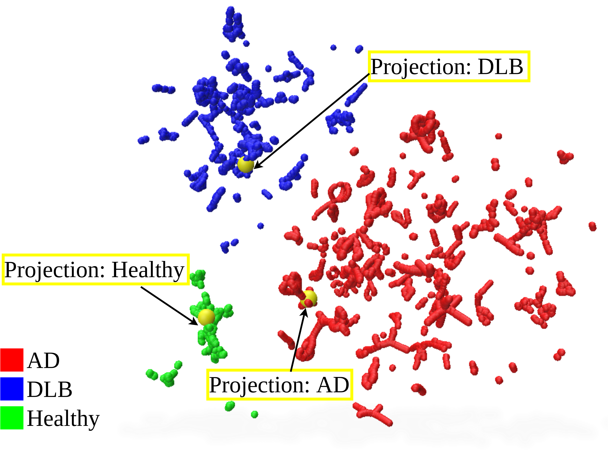
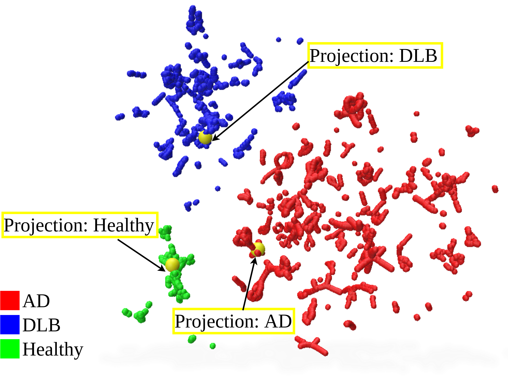

We provide interactive webpages to visualize the Numerical Text Embeddings derived from gait parameters. The embeddings are visualized using UMAP with 3 components, and the projections of learned per-class text features are highlighted in yellow.
We present a knowledge augmentation strategy for assessing the diagnostic groups and gait impairment from monocular gait videos. Based on a large-scale pre-trained Vision Language Model (VLM), our model learns and improves visual, textual, and numerical representations of patient gait videos, through a collective learning across three distinct modalities: gait videos, class-specific descriptions, and numerical gait parameters. Our specific contributions are two-fold: First, we adopt a knowledge-aware prompt tuning strategy to utilize the class-specific medical description in guiding the text prompt learning. Second, we integrate the paired gait parameters in the form of numerical texts to enhance the numeracy of the textual representation. Results demonstrate that our model not only significantly outperforms state-of-the-art methods in video-based classification tasks but also adeptly decodes the learned class-specific text features into natural language descriptions using the vocabulary of quantitative gait parameters.
 

We provide interactive webpages to visualize the Numerical Text Embeddings derived from gait parameters. The embeddings are visualized using UMAP with 3 components, and the projections of learned per-class text features are highlighted in yellow.
@article{wang2024enhancing,
title={Enhancing Gait Video Analysis in Neurodegenerative Diseases by Knowledge Augmentation in Vision Language Model},
author={Wang, Diwei and Yuan, Kun and Muller, Candice and Blanc, Fr{\'e}d{\'e}ric and Padoy, Nicolas and Seo, Hyewon},
journal={arXiv preprint arXiv:2403.13756},
year={2024}
}